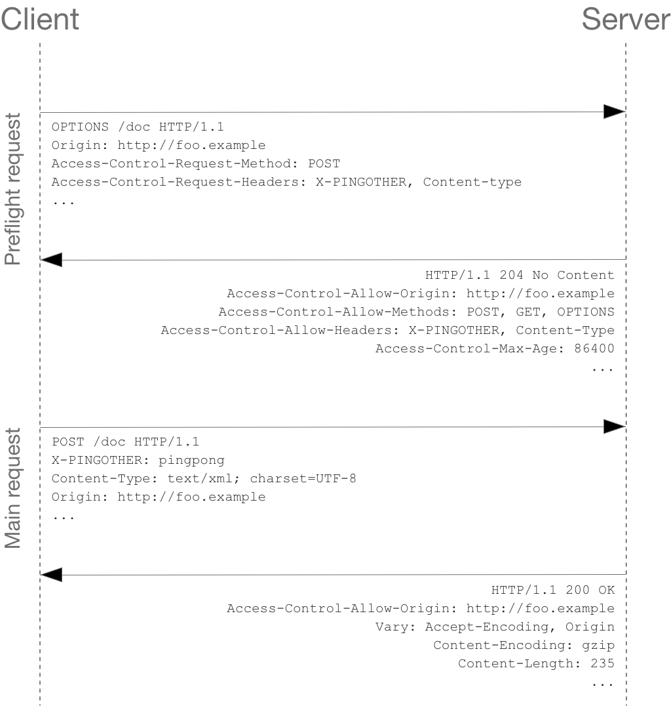

Cross-Origin Resource Sharing (CORS) is an HTTP-header based mechanism that allows a server to indicate any other origins (domain, scheme, or port) than its own from which a browser should permit loading of resources. CORS also relies on a mechanism by which browsers make a “preflight” request to the server hosting the cross-origin resource, in order to check that the server will permit the actual request. In that preflight, the browser sends headers that indicate the HTTP method and headers that will be used in the actual request.
An example of a cross-origin request: the front-end JavaScript code served from https://domain-a.com uses XMLHttpRequest to make a request for https://domain-b.com/data.json.
For security reasons, browsers restrict cross-origin HTTP requests initiated from scripts. For example, XMLHttpRequest and the Fetch API follow the same-origin policy. This means that a web application using those APIs can only request resources from the same origin the application was loaded from unless the response from other origins includes the right CORS headers.

The Cross-Origin Resource Sharing standard works by adding new HTTP headers that let servers describe which origins are permitted to read that information from a web browser. Additionally, for HTTP request methods that can cause side-effects on server data (in particular, HTTP methods other than GET, or POST with certain MIME types), the specification mandates that browsers “preflight” the request, soliciting supported methods from the server with the HTTP OPTIONS request method, and then, upon “approval” from the server, sending the actual request. Servers can also inform clients whether “credentials” (such as Cookies and HTTP Authentication) should be sent with requests.
Simple requests
Some requests don’t trigger a CORS preflight. Those are called “simple requests” in this article, though the Fetch spec (which defines CORS) doesn’t use that term. A “simple request” is one that meets all the following conditions:
- One of the allowed methods:
- Apart from the headers automatically set by the user agent (for example,
Connection,User-Agent, or the other headers defined in the Fetch spec as a “forbidden header name”), the only headers which are allowed to be manually set are those which the Fetch spec defines as a “CORS-safelisted request-header”, which are:AcceptAccept-LanguageContent-LanguageContent-Type(but note the additional requirements below)
- The only allowed values for the
Content-Typeheader are:application/x-www-form-urlencodedmultipart/form-datatext/plain
- No event listeners are registered on any
XMLHttpRequestUploadobject used in the request; these are accessed using theXMLHttpRequest.uploadproperty. - No
ReadableStreamobject is used in the request.
1 | # request |
Preflighted requests
Unlike “simple requests” (discussed above), for “preflighted” requests the browser first sends an HTTP request using the OPTIONS method to the resource on the other origin, in order to determine if the actual request is safe to send. Cross-site requests are preflighted like this since they may have implications to user data.
The following is an example of a request that will be preflighted:
1 | const xhr = new XMLHttpRequest(); |

Requests with credentials
The most interesting capability exposed by both XMLHttpRequest or Fetch and CORS is the ability to make “credentialed” requests that are aware of HTTP cookies and HTTP Authentication information. By default, in cross-site XMLHttpRequest or Fetch invocations, browsers will not send credentials. A specific flag has to be set on the XMLHttpRequest object or the Request constructor when it is invoked.
In this example, content originally loaded from http://foo.example makes a simple GET request to a resource on http://bar.other which sets Cookies. Content on foo.example might contain JavaScript like this:
1 | const invocation = new XMLHttpRequest(); |

Credentialed requests and wildcards
When responding to a credentialed request, the server must specify an origin in the value of the Access-Control-Allow-Origin header, instead of specifying the “*“ wildcard.
Because the request headers in the above example include a Cookie header, the request would fail if the value of the Access-Control-Allow-Origin header was ““. But it does not fail: Because the value of the Access-Control-Allow-Origin header is “http://foo.example“ (an actual origin) rather than the “``” wildcard, the credential-cognizant content is returned to the invoking web content.
Note that the Set-Cookie response header in the example above also sets a further cookie. In case of failure, an exception—depending on the API used—is raised.
The HTTP response headers
1 | Access-Control-Allow-Origin: <origin> | * |
The HTTP request headers
1 | Origin: <origin> |